Alumni
Founder of Cobra Kai Sensai John Kreese
John Kreese, former US soldier and Vietnam veteran, founded Cobra Kai in 1979. He wanted to teach kids how to defend themselves in this cruel world.
Cobra Kai won their first title in '83 when Johhny Lawrence became champion. Kreese continued to train until 1986 when he left Cobra Kai.
However, recently he returned to aid Johnny Lawrence who reopened Cobra Kai in 2018, after a brief change of ownership, and now runs the Dojo once again.
x2 Champion Johnny Lawrence
Unfortunately disaster struck when Daniel Larusso cheated to beat in the '84 finals.
However, in 2018 Johnny reopened Cobra Kai himself, and began to train a new generation of fighters under his guidance.
80's Crew
Tommy
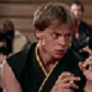Bobby
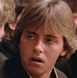Dutch
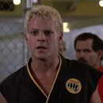Jimmy
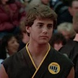New Recuits
x1 Champion Miguel Diaz
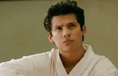Aisha Robinson
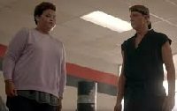Hawk
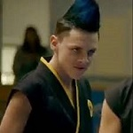Tory
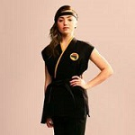Nathaniel 'kid'
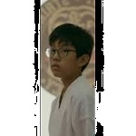Cobra Kai Classes
1984
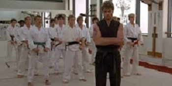2018
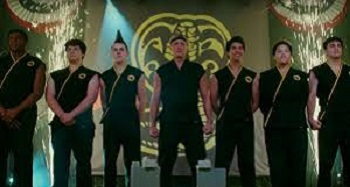